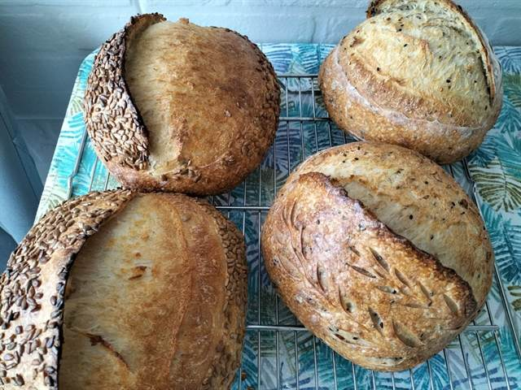
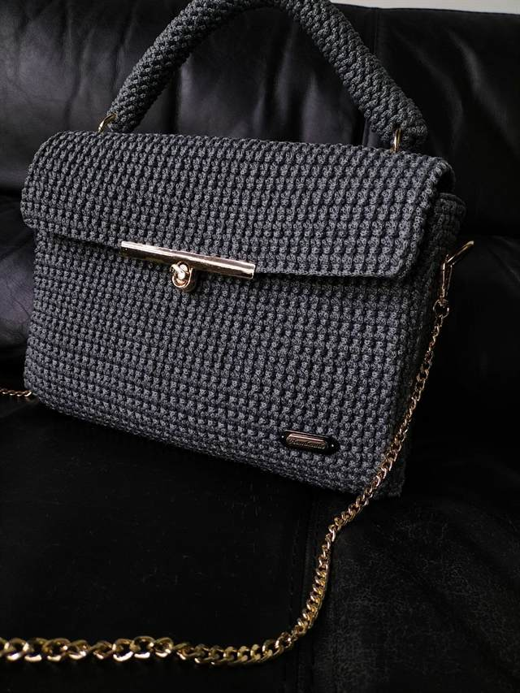
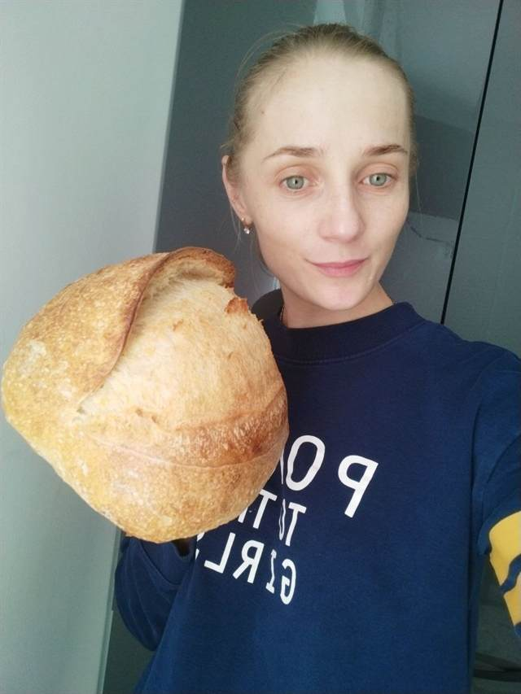
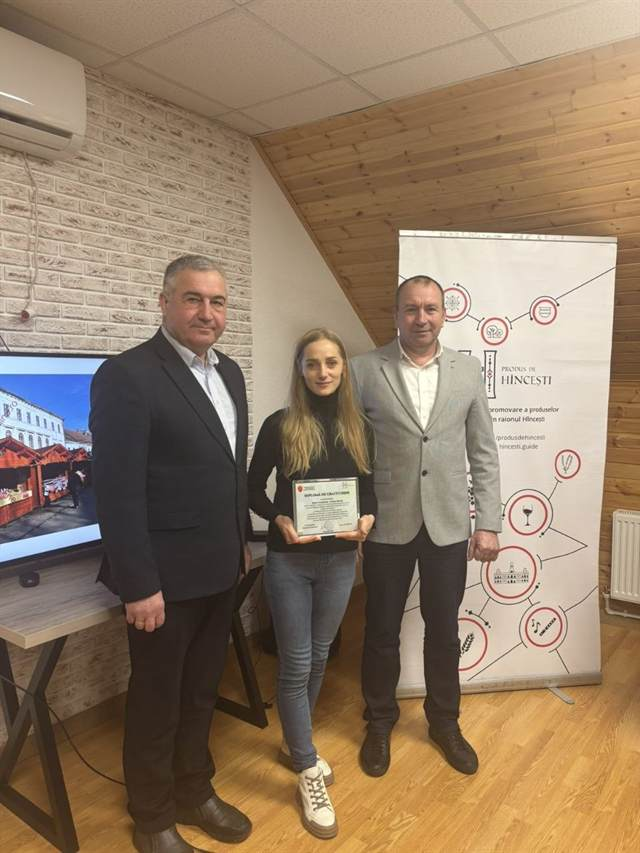

Marina Rotari
Făcut de mână, cu suflet și cu drag
Pâine de casă cu maia, cu coaja crocantă, cozonaci pufoși și torturi pentru zilele frumoase. Genți croșetate fir cu fir și textile pentru masa ta, cusute cu răbdare. Totul pregătit la comandă, doar pentru tine.
Ce creez pentru tine

Brutărie
Pâine cu maia naturală, cozonaci, focaccia, rulouri și torturi — coapte proaspăt, la comandă.
Descoperă →
Croșetat
Genți, rucsacuri și coșulețe RM Bags, croșetate manual, gata pe loc sau la comandă.
Descoperă →Croitorie
Traverse și fețe de masă, șervețele textile, pe măsura mesei tale.
Descoperă →Brutăria Marinei
Pâinea mea se face cu maia, după rețeta de odinioară. Maiaua e un aluat viu, îngrijit și hrănit zi de zi, care lasă pâinea să crească încet, ore întregi. Așa capătă gust bogat, ușor acrișor, coajă aurie și crocantă și miez aerat.
- Pâine cu maia din făină de grâu
clasică, rumenă, cu miez aerat - Pâine cu maia și mix de semințe
din făină de grâu sau integrală - Pâine integrală cu maia
din făină integrală de grâu - Cozonaci & dulciuri
cozonac, rulouri, brioșe cu ciocolată - Focaccia & torturi
pentru mese în familie și ocazii speciale
Genți croșetate
Genți croșetate manual, cu închizători metalice, mânere solide și forme elegante. Le găsești gata făcute sau le comanzi în culoarea și modelul preferat.
- Genți de mână & poșete
cu lanț, cu mâner sau de umăr - Rucsacuri
încăpătoare și rezistente - Coșulețe decorative
pentru casă și organizare - Comenzi personalizate
culoarea, mărimea și modelul alese de tine
Croitorie & textile
Textile pentru casă cusute cu grijă, din materiale plăcute la atingere. O traversă nouă sau o față de masă potrivită schimbă complet atmosfera unei încăperi.
- Traverse de masă
de exemplu 170 × 40 cm, sau pe măsură - Fețe de masă
pentru masa de zi cu zi și de sărbătoare - Șervețele textile
seturi asortate, în culori vii - Decor de sărbătoare
modele de Paște și de Crăciun
Video din bucătărie și atelier

Bună, sunt Marina
„Îmi place să creez lucruri care aduc căldură în casă, fie o pâine caldă pe masă, o geantă croșetată sau o traversă nouă.”
Am început din dragoste pentru lucrurile făcute ca odinioară: aluat frământat cu mâna, fire alese cu grijă, cusături drepte și curate. Astăzi coc pâine și dulciuri la comandă, croșetez genți sub numele RM Bags și cos textile pentru casă.
Mă găsești și la târgurile locale, unde îmi prezint lucrările cu drag.

Cum comanzi
Mă suni
Sună sau scrie-mi la 067 272 743 și spune-mi ce îți dorești.
Alegem împreună
Stabilim tipul de pâine, modelul genții sau dimensiunile textilului.
Pregătesc cu drag
Totul se face manual, proaspăt și cu atenție la fiecare detaliu.
Te bucuri
Ridici comanda și te bucuri de un lucru unic, făcut pentru tine.